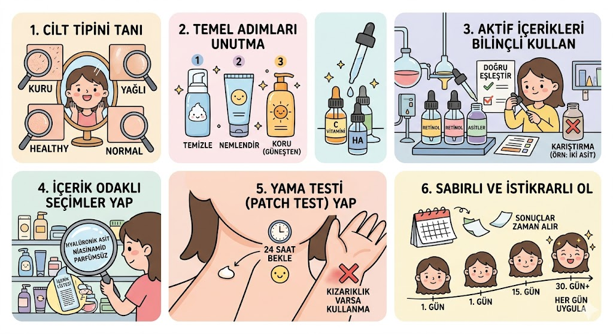

Cilt bakımı, cildin sağlığını ve bütünlüğünü korumak, görünümünü iyileştirmek ve olası cilt problemlerini önlemek veya hafifletmek için yapılan uygulamaların tümüdür. Bu sadece estetik bir adım değil, aynı zamanda vücudumuzun dış dünyaya karşı kalkanı olan en büyük organımızın sağlığına yapılan bir yatırımdır. Temelde cildi kirden arındırmak, ihtiyacı olan nemi sağlamak ve dış etkenlerin (özellikle güneşin) zararlı etkilerinden korumak üzerine kuruludur.

Cilt Tipini Doğru Tanımak: Her şeyin başı cildinin kuru, yağlı, karma veya hassas olup olmadığını bilmektir. Kullanacağın her ürün bu temele göre seçilmelidir; başkasına çok iyi gelen bir ürün senin cilt tipine uygun değilse sivilcelenme veya kuruluk yapabilir.
Adımları Atlamamak: İyi bir rutinin üç sarsılmaz direği vardır: Nazik bir temizleyici, cildin yapısına uygun bir nemlendirici ve yaz-kış her gün kullanılması gereken güneş kremi. Bu temel oturtulmadan diğer adımlara geçilmemelidir.
İçerikleri Bilinçli Kullanmak: Cildine ekstra destek sağlamak için Hyalüronik Asit, C Vitamini, Niacinamide, Retinol, Glikolik Asit veya Arbutin gibi güçlü serumlar harikadır. Ancak bu içerikleri kullanırken cilt bariyerini yormamaya özen göstermeli ve birbirleriyle çakışan ürünleri (örneğin iki farklı asidi aynı anda) üst üste sürmekten kaçınmalısın.
Odaklı Seçimler Yapmak: Göz alıcı ambalajlar yerine ürünün içindeki maddelere odaklanmak her zaman daha iyi sonuç verir. The Purest Solutions, Maruderm veya The Ordinary gibi doğrudan etken madde odaklı ve temiz içerikli markaları tercih ederken, formülasyonun tam olarak ne işe yaradığını bilerek alışveriş yapmak bütçeni de korur.
Yama Testi (Patch Test) Yapmak: Rutinine yeni bir ürün ekleyeceğin zaman tüm yüzüne sürmeden önce çene altın, boynun veya bileğinin iç kısmı gibi küçük bir alanda deneyerek alerjik reaksiyon olup olmadığını gözlemlemelisin.
Sabırlı ve İstikrarlı Olmak: Cilt hücrelerinin yenilenme döngüsü ortalama 28 gün sürer. Bir ürünün işe yarayıp yaramadığını görmek için bir iki günde pes etmemeli, düzenli kullanıma devam etmelisin.